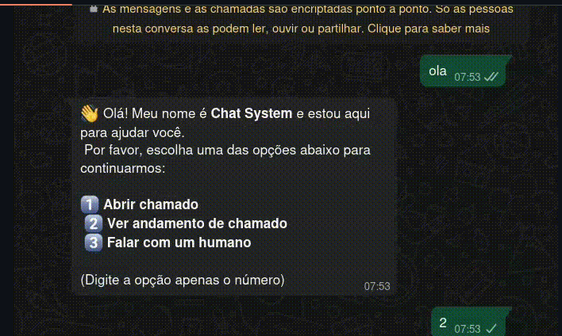

Completo 001 // BOTGLPIPROJECT / 001RPA + AI
Chatbot GLPI
AI + Automation + ITSM
Chatbot de suporte inteligente integrando N8N, GLPI, OpenAI GPT-4.1 e WhatsApp API. Automatiza abertura e acompanhamento de chamados com resumos gerados por IA, oferecendo atendimento 24/7.
Problema
Abertura e acompanhamento de chamados de suporte no GLPI, com necessidade de atendimento 24/7.
Solução
Fluxo no N8N que conecta WhatsApp, GLPI e OpenAI via webhooks, com resumos dos chamados gerados por IA.
Stack